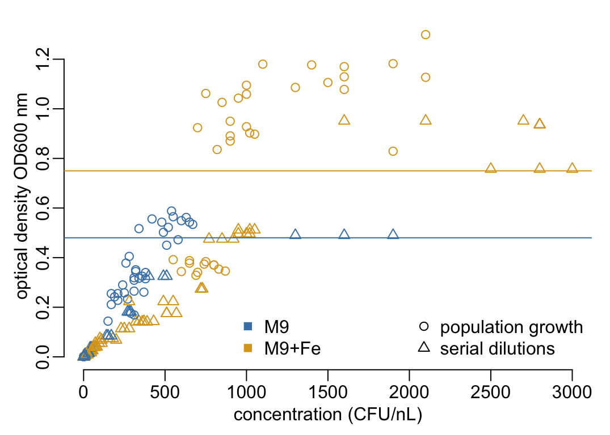
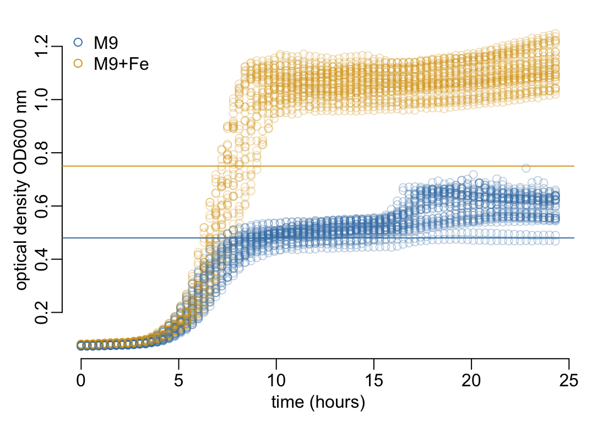
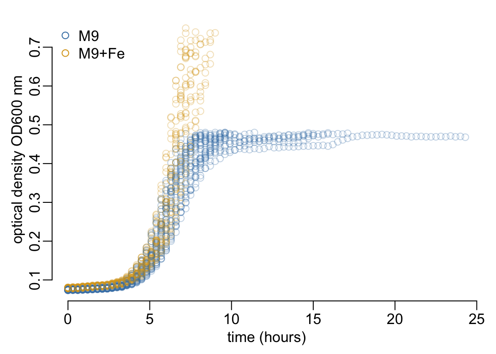
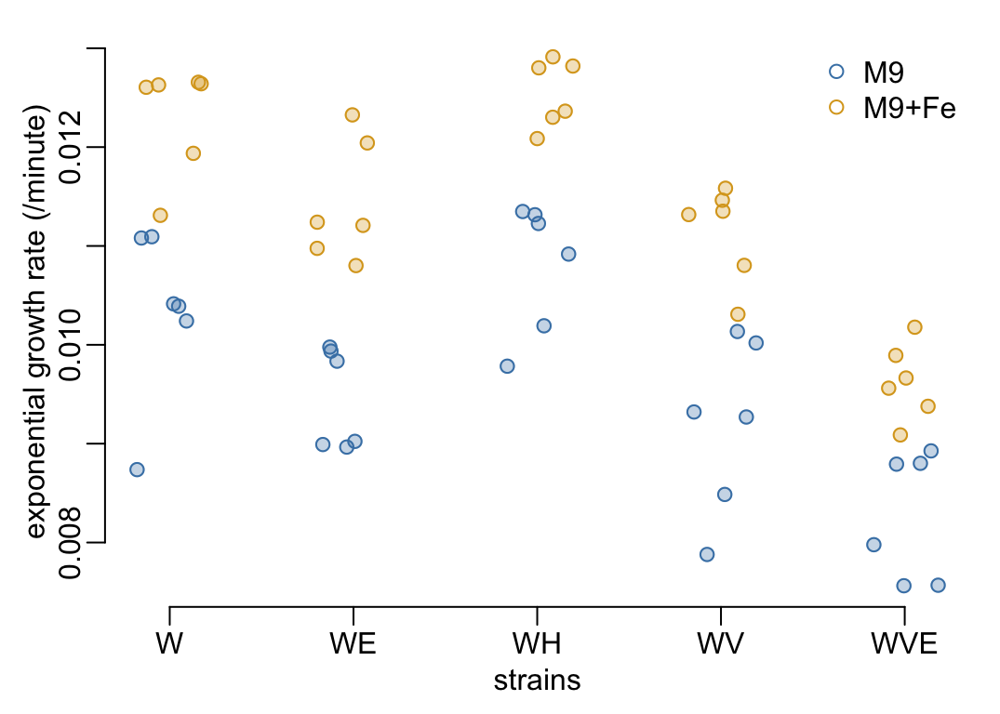

user <- Sys.getenv("USER")
if (user %in% c("MarcChoisy", "marc")) {
path2data <- paste0(Sys.getenv("HOME"), "/Library/CloudStorage/",
"OneDrive-OxfordUniversityClinicalResearchUnit/",
"GitHub/choisy/Kp_growth_curves/")
}K. pneumoniae growth curves
1 Parameters
The path to the data:
The names of the data files:
culture_data <- "CultureData_11523_Van.xlsx"
serial_dilutions <- "Serial dilution.xlsx"Colors:
media <- c("M9", "M9+Fe")
coln <- c("steelblue", "goldenrod")
alpha <- .32 Packages
Required packages:
to_load <- c("dplyr", "tidyr", "purrr", "stringr", "magrittr", "mgcv")
required <- c("readxl", to_load)Installing those that are not installed yet:
to_install <- required[! required %in% installed.packages()[,"Package"]]
if (length(to_install)) install.packages(to_install)Loading the packages for interactive use:
invisible(sapply(to_load, library, character.only = TRUE))3 Functions
A tuning of read_excel():
read_excel2 <- function(file, ...) readxl::read_excel(paste0(path2data, file), ...)A tuning of plot()
plot_od <- function(...) plot(..., ylab = "optical density OD600 nm")Colors:
cols <- setNames(coln, media)
cols_alpha <- setNames(adjustcolor(coln, alpha), media)A tuning of legend():
legend2 <- function(...) legend(..., legend = media, pch = 1, bty = "n", col = cols)4 Serial dilution data
A function that formats the serial dilution data:
format_serial_dilutions <- function(x) {
x |> mutate(across(c(CFU1, CFU2, CFU3),
~ .x / (`Inoculum volume (Ml)` * `Countable Dilution`))) |>
select(`OD values`, CFU1, CFU2, CFU3) |>
pivot_longer(-`OD values`) |>
select(-name) |>
rename(OD = `OD values`, concentration = value)
}Loading the serial dilution data:
SD_M9 <- serial_dilutions |>
read_excel2("SD M9") |>
format_serial_dilutions()
SD_M9Fe <- paste("SD M9+Fe", 1:3) |>
map_dfr(~ read_excel2(serial_dilutions, .x)) |>
format_serial_dilutions()A function that formats the data of growing populations:
format_growing_populations <- function(x) {
x |>
mutate(across(CFU, ~ .x / (`Inoculum volume (Ml)` * `Countable Dilution`))) |>
select(OD_600, CFU) |>
rename(OD = OD_600, concentration = CFU)
}Loading the growing populations data:
GP_M9 <- serial_dilutions |>
read_excel2("GP M9") |>
format_growing_populations()
GP_M9Fe <- serial_dilutions |>
read_excel2("GP M9+Fe") |>
format_growing_populations()Combining the serial dilution and the growing population data for the M9 and the Me+Fe media:
(dilution_data <- list(list(SD_M9, GP_M9),
list(SD_M9Fe, GP_M9Fe)) |>
map(~ bind_rows(set_names(.x, c("SD", "GP")), .id = "method")) |>
set_names(c("M9", "M9+Fe")) |>
bind_rows(.id = "medium"))# A tibble: 225 × 4
medium method OD concentration
<chr> <chr> <dbl> <dbl>
1 M9 SD 0.49 1600000000
2 M9 SD 0.49 1900000000
3 M9 SD 0.49 1300000000
4 M9 SD 0.325 400000000
5 M9 SD 0.325 510000000
6 M9 SD 0.325 490000000
7 M9 SD 0.181 290000000
8 M9 SD 0.181 270000000
9 M9 SD 0.181 280000000
10 M9 SD 0.085 150000000
# ℹ 215 more rowsPlotting the dilution data:
dilution_data |>
mutate(across(concentration, ~ .x * 1e-6),
pch = (method == "SD") + 1,
col = cols[medium]) |>
slice_sample(prop = 1) |>
with(plot_od(concentration, OD, pch = pch, col = col,
xlab = "concentration (CFU/nL)"))
thresholds <- set_names(c(.48, .75), media)
abline(h = thresholds, col = cols)
legend("bottomright", ncol = 2, bty = "n",
legend = c(media, "population growth", "serial dilutions"),
col = c(cols, "black", "black"), pch = c(15, 15, 1, 2))
It shows that above some threshold values of OD, the OD values should not be used to quantify any growth.
5 Culture data
Loading the data and expressing time in minutes:
(od_data <- culture_data |>
read_excel2() |>
group_by(Sample, Medium) |>
mutate(replicate = row_number()) |>
ungroup() |>
pivot_longer(- c(Sample, Medium, replicate), names_to = "time", values_to = "OD") |>
mutate(across(time, ~ .x |>
str_remove(" *h$") |>
as.numeric() |>
multiply_by(60) |>
round() |>
as.integer())))# A tibble: 4,920 × 5
Sample Medium replicate time OD
<chr> <chr> <int> <int> <dbl>
1 W M9 1 0 0.078
2 W M9 1 18 0.077
3 W M9 1 36 0.078
4 W M9 1 54 0.079
5 W M9 1 72 0.079
6 W M9 1 90 0.08
7 W M9 1 108 0.082
8 W M9 1 126 0.081
9 W M9 1 144 0.084
10 W M9 1 162 0.086
# ℹ 4,910 more rowsLooking at the levels:
(unique_levels <- od_data |>
select(-OD) |>
map(~ sort(unique(.x))))$Sample
[1] "W" "WE" "WH" "WV" "WVE"
$Medium
[1] "M9" "M9+Fe"
$replicate
[1] 1 2 3 4 5 6
$time
[1] 0 18 36 54 72 90 108 126 144 162 180 198 216 234 252
[16] 270 288 306 324 342 360 378 396 414 432 450 468 486 504 522
[31] 540 558 576 594 612 630 648 666 684 702 720 738 756 774 792
[46] 810 828 846 864 882 900 918 936 954 972 990 1008 1026 1044 1062
[61] 1080 1098 1116 1134 1152 1170 1188 1206 1224 1242 1260 1278 1296 1314 1332
[76] 1350 1368 1386 1404 1422 1440 1458Checking the regularity of time measurements:
unique(diff(unique_levels$time))[1] 18The number of combinations:
unique_levels |>
map_int(length) |>
reduce(`*`)[1] 4920Number of replicates per combination:
(nb_rep <- od_data |>
group_by(Sample, Medium, time) |>
tally())# A tibble: 820 × 4
# Groups: Sample, Medium [10]
Sample Medium time n
<chr> <chr> <int> <int>
1 W M9 0 6
2 W M9 18 6
3 W M9 36 6
4 W M9 54 6
5 W M9 72 6
6 W M9 90 6
7 W M9 108 6
8 W M9 126 6
9 W M9 144 6
10 W M9 162 6
# ℹ 810 more rowsChecking that we have all the combinations:
nrow(nb_rep)[1] 820Looking at the number of replicates per combination:
nb_rep |>
pull(n) |>
unique()[1] 6A function that plots the data:
plot_data <- function(x, ...) {
x |>
mutate(across(time, ~ divide_by(.x, 60))) |>
slice_sample(prop = 1) |>
with(plot_od(time, OD, xlab = "time (hours)", col = cols_alpha[Medium], ...))
legend2("topleft")
}Plotting the OD values:
plot_data(od_data)
thresholds |>
(\(x) abline(h = x, col = cols[names(x)]))()
Discarding the data points with OD values below the thresholds:
od_data2 <- filter_out(od_data, OD > thresholds[Medium])
plot_data(od_data2)
6 Exponential rates
A function that computes the maximal (i.e. exponential) growth rate in a way that it is robust to any latency phase before the exponential growth actually starts:
compute_r <- function(x, k = 20, by = 1) {
x |>
mutate(across(OD, log)) |>
gam(OD ~ s(time, k = k), data = _, method = "REML") |>
predict(list(time = seq(min(x$time), max(x$time), by))) |>
diff() |>
max()
}Computing the exponential growth rates for each replicate:
r_values <- od_data2 |>
group_by(Sample, Medium, replicate) |>
group_modify(~ tibble(r = compute_r(.x))) |>
ungroup()Plotting the growth rates of replicates arranged by strain and culture medium:
labels <- unique(r_values$Sample)
ats <- labels |>
(\(x) set_names(seq_along(x), x))()
r_values |>
mutate(across(Sample, ~ jitter(ats[.x])),
col = cols[Medium],
col_alpha = cols_alpha[Medium]) |>
with({
plot(Sample, r, col = col, xaxt = "n",
xlab = "strains", ylab = "exponential growth rate (/minute)")
points(Sample, r, col = col_alpha, pch = 19)
})
axis(1, ats, labels)
legend2("topright")